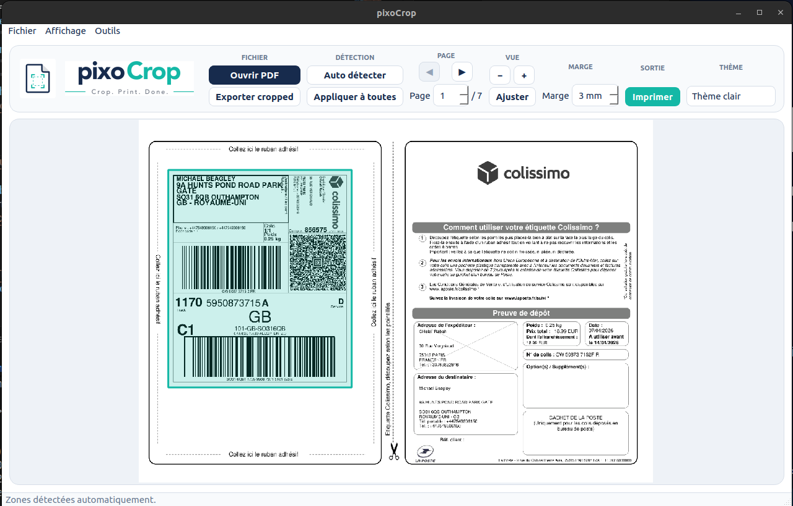

Detection automatique
Ouvrez un PDF, PixoCrop cherche la zone de bordereau et affiche le rectangle a imprimer.
PDF · Etiquettes · Impression
PixoCrop detecte la zone utile d'un PDF, la recadre proprement et l'envoie a l'imprimante avec un apercu clair.

Le flux de travail
Ouvrez un PDF, PixoCrop cherche la zone de bordereau et affiche le rectangle a imprimer.
Dessinez ou deplacez la zone si le document a un format particulier.
Choisissez l'imprimante, les pages, le zoom, le recto-verso et les reglages par defaut du pilote.
Generez un executable autonome a double-cliquer avec
la cible make release-linux.
Documentation rapide
Le parcours reste volontairement court : charger, verifier, ajuster si besoin, imprimer.
Ouvrez un PDF ou deposez-le dans l'aperçu.
Laissez PixoCrop detecter automatiquement la zone utile.
Ajustez la marge, le rectangle ou appliquez la zone a toutes les pages.
Ouvrez la fenetre d'impression et utilisez les parametres de l'imprimante ou vos propres reglages.
git clone https://github.com/PixoGlace/pixoCrop.git
cd pixoCrop
make dev
make runmake release-linux
tar -xzf release/pixoCrop-linux-x86_64.tar.gz
./pixoCrop-linux-x86_64/pixoCropInstaller et publier
La vitrine vit dans docs/. Dans GitHub,
activez Pages depuis la branche principale avec le
dossier /docs.
Binaires prets a lancer
Linux
Archive tar.gz avec binaire a
double-cliquer et fichier desktop.
Windows
Archive Windows generee depuis une machine Windows ou une CI dediee.
macOS
Archive macOS a produire sur macOS pour respecter le packaging natif.
Libre, mais protege
Projet PixoGlace
Contribuez, signalez un souci d'impression ou proposez un format de bordereau a mieux detecter.
Ouvrir une issue